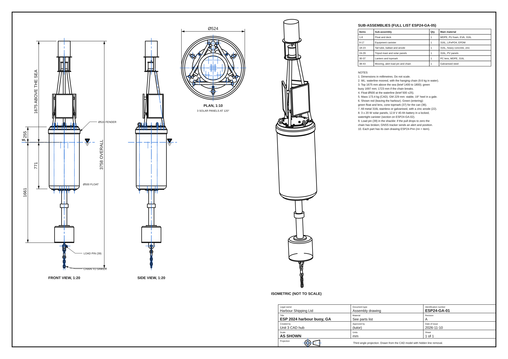
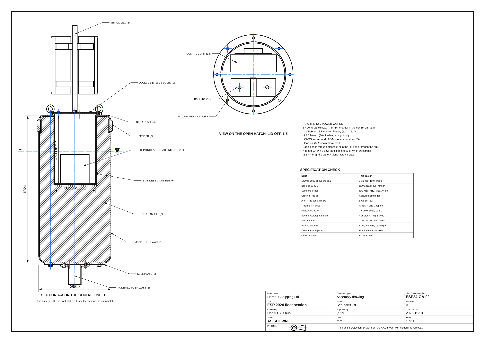
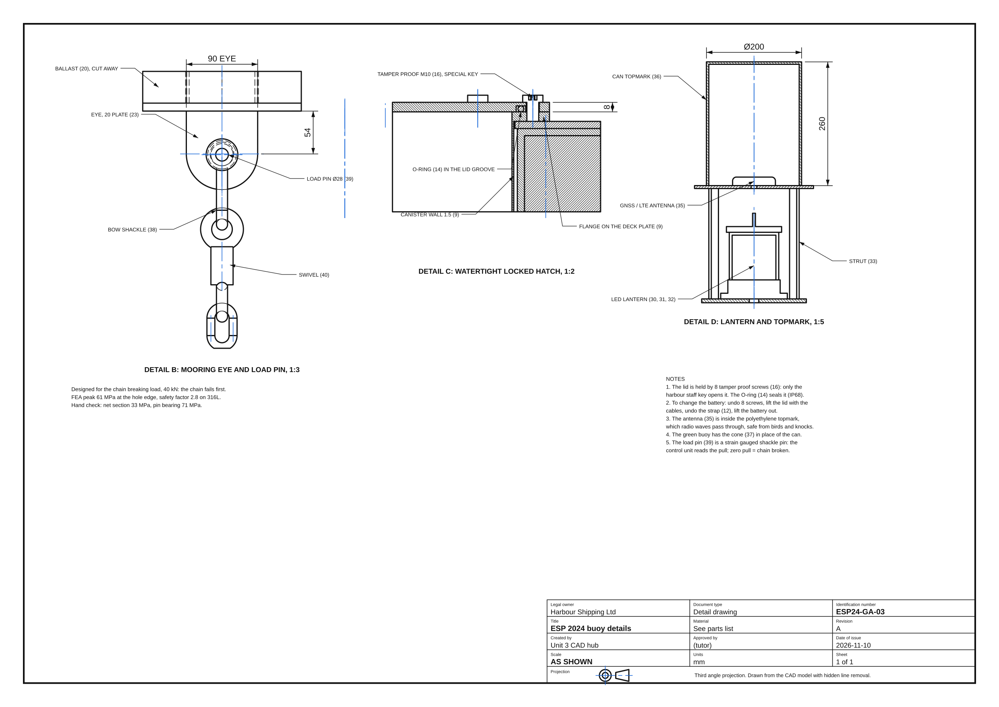
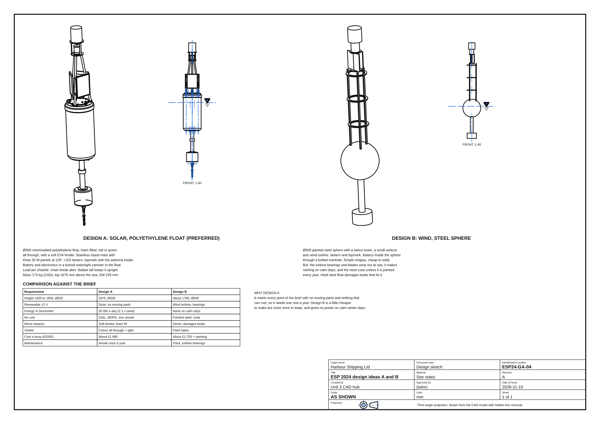
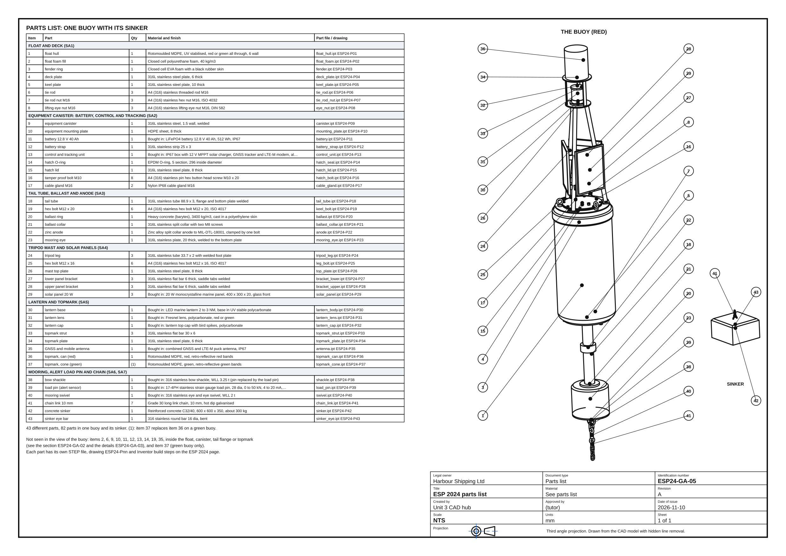
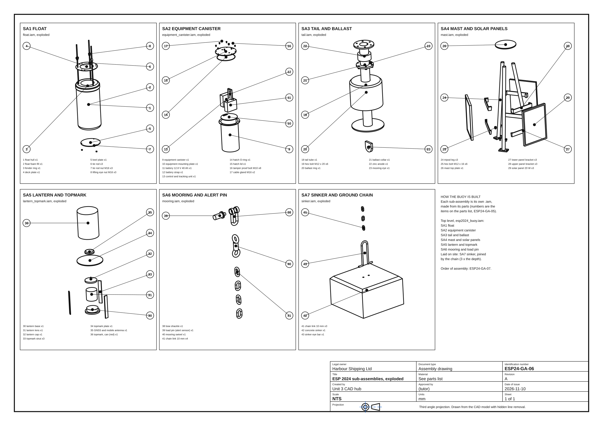

Task 2 submission set
Part A (two design ideas with the base, materials, shape, sizes, alert, tracking, renewable power and corrosion protection): sheet ESP24-GA-04, with the calculations (energy produced against energy needed, floating and stability, mooring loads, cost and time, every assumption) in their own document. Part B (the preferred design, annotated, with a title block): sheets ESP24-GA-01 to 03, the parts list ESP24-GA-05 and a drawing for every one of the 43 parts (ESP24-P01 to P43), with the reflective notes (about 500 words) in their own document.
Drawings (A3)


















Every part also has its own sheet (third angle and first angle, with a key sizes table), listed with the parts below. All drawings are in the drawings folder.
Simulation: rolling in waves, then the chain breaks
Inventor Dynamic Simulation
The moored buoy rolls in a short harbour sea. Half way through the chain breaks: the load pin pull falls to zero, which is the alert, and the buoy drifts away while the tracker reports where it is. The graphs show the roll, the load pin pull and the distance from the mooring.
The buoy, all round
All 77 parts: float, fender, canister with the battery and control unit, tail and ballast, tripod mast, solar panels, lantern, topmark and the mooring with its load pin.
Models
| Model | What it shows | Open | Files |
|---|---|---|---|
| Harbour buoy, red (GA) | The preferred design for leaving the harbour: 43 different parts, 77 in the buoy. Parts list with show and hide, section through the float, simulation of the chain breaking. | 3D · Build steps · Simulation | STEP · STL |
| Harbour buoy, green | The same buoy for entering the harbour: green float and lens, cone topmark. | 3D · Build steps | STEP · STL |
| Mooring eye (part 23) | FEA of the mooring eye at the breaking load of the chain, checked by hand. | 3D · FEA | STEP |
| Concept B: wind powered steel sphere | The second design idea, for comparison. | 3D · Build steps | STEP |
How it goes together: 7 sub-assemblies
As in Inventor, the parts are first put together into sub-assemblies (each its own .iam), and six of them are then placed into the buoy; the seventh, the sinker, is laid on the harbour bed and joined by the chain. Each one below has its own 3D model with an exploded view, a parts list, and Inventor build steps that add one part at a time. The buoy's own Build steps then place the sub-assemblies in order; the drawings ESP24-GA-06 (exploded) and GA-07 (structure and order) show the same on paper.
Every part (43)
Each component is its own part, as it would be in Inventor (a .ipt file): its own 3D model, Inventor build steps, drawing with a key sizes table, and STEP file. Numbers are the item numbers on the parts list, ESP24-GA-05.
Key results
From the CAD model and the calculation sheet (read from ESP24_calculations.json).
| Check | Brief | This design |
|---|
How it was made
Every model is parametric CadQuery Python in models/esp2024.py in the repository: change a number (the float size, the mast height, the ballast) and rebuild; the waterline and stability are worked out again from the parts. The Inventor build steps are in models/esp2024_steps.py, the dimensioned sheets in tools/esp2024_drawings.py, the calculations and notes in tools/esp2024_calcs.py, and the clash and floating checks in tools/esp2024_checks.py. Build steps and the simulation are written as the Autodesk Inventor commands a learner would use; the stage models are CadQuery, not Inventor files.